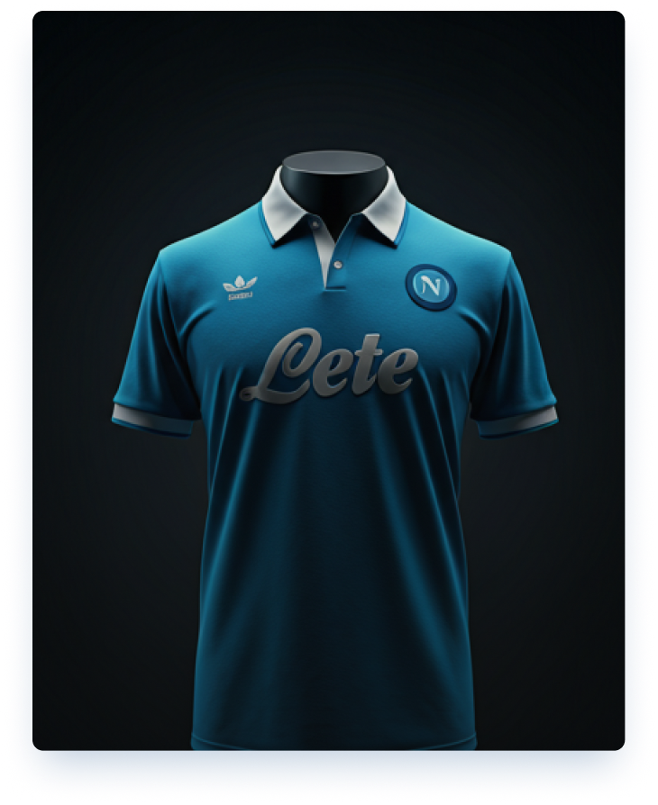

Argentina '86 Home Retro
$90.00Legendaria camiseta celeste y blanca con la que Diego tocó el cielo en México.

Una prenda emblemática de la historia del fútbol. La camiseta de local de la temporada 1987-88, la misma que lució el Nápoles cuando ganó su primer título de la Serie A. Incluye el clásico patrocinador «Lete» y el escudo bordado. 100 % poliéster, tejido transpirable.
Una prenda emblemática de la historia del fútbol. La camiseta de local de la temporada 1987-88, la misma que lució el Nápoles cuando ganó su primer título de la Serie A. Incluye el clásico patrocinador «Lete» y el escudo bordado. 100 % poliéster, tejido transpirable.
Fabricada en 100% poliéster de alta resistencia con tecnología transpirable. Se recomienda lavado a mano con agua fría y del revés para preservar los estampados y el escudo bordado. No utilizar secadora ni planchar directamente sobre los detalles termoaplicados.
Realizamos envíos nacionales a través de correo prioritario. El tiempo estimado de entrega es de 3 a 5 días hábiles. Si no estás conforme con el talle o el estado del producto, cuentas con 30 días corridos desde la recepción para solicitar un cambio sin costo adicional.
En 90 Minutos curamos exhaustivamente cada prenda de nuestro catálogo. Esta camiseta ha sido verificada en detalle por nuestro equipo técnico de expertos para asegurar su fidelidad con la época, calidad de costuras, textura de tela y etiquetas originales.
Completa tu colección con estos clásicos
Legendaria camiseta celeste y blanca con la que Diego tocó el cielo en México.

Camiseta retro del rossonero campeón con el histórico trío holandés en Italia.

La clásica verdeamarela de O Rei Pelé consagrándose tricampeón en el Estadio Azteca.